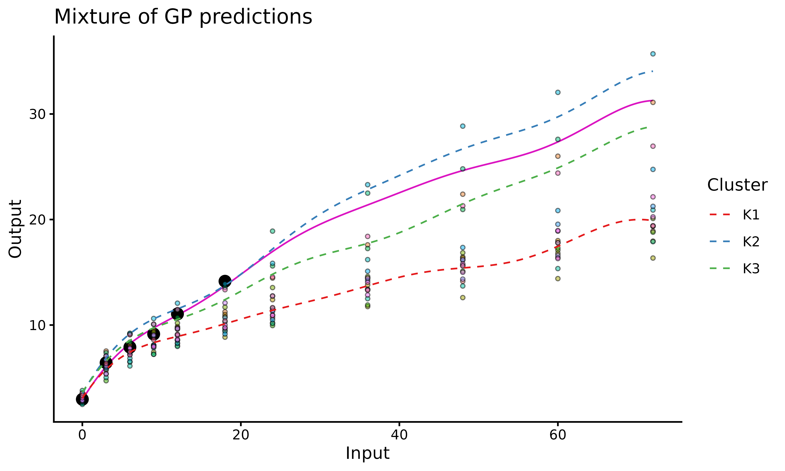
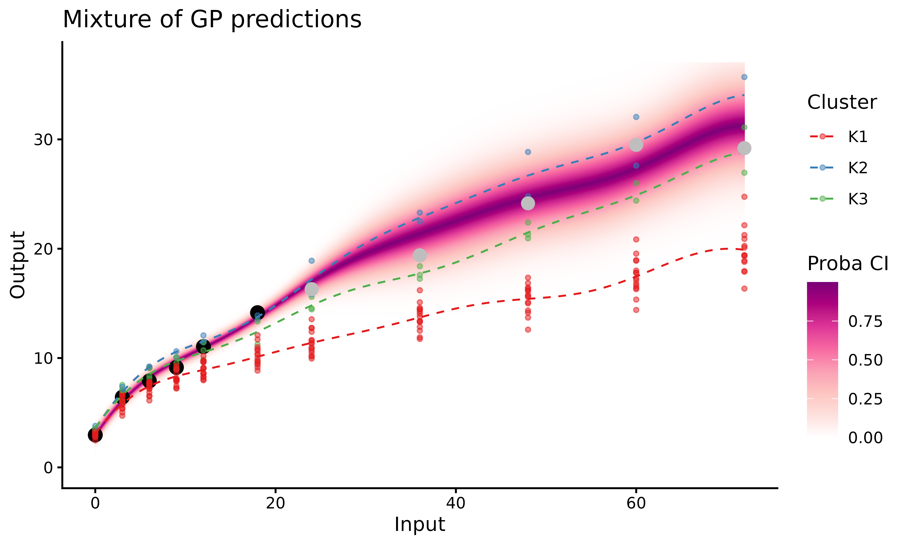

How to use MagmaClust
Source:vignettes/articles/how-to-use-magmaclust.Rmd
how-to-use-magmaclust.Rmd
library(MagmaClustR)
library(dplyr)
library(ggplot2)
if(rlang::is_installed("gridExtra")){library(gridExtra)}Data and purpose
Context
To explore the features of MagmaClust, we use the weight
dataset available here,
coming from the GUSTO cohort study (https://www.gusto.sg/) and more thoroughly studied here). This dataset contains
3629 weight measurements of Singaporean children (174 boys and 168
girls, respectively).
Throughout this example, we use MagmaClust to model and forecast evolution of children’s weight during early childhood. This extension of the Magma model has been proposed to take into account the presence of group structures in within data (a similar vignette for Magma is available here) to enhance predictions.
More generally, our aim is to train a model on a dataset containing multiple individuals and predict a new individual’s weight thanks to shared information within clusters.
To get a better idea of the weight dataset content, we
display an illustration of the observed data for 5 children. Do the
children’s weights evolve the same, i.e. with the same pattern?
Can we identify group structures in the data, and define appropriate
clusters? Those are the kind of questions we aim to tackle in the
following.
set.seed(10)
list_ID <- weight %>% pull(ID) %>% sample()
ggplot2::ggplot(data=weight %>% filter(ID %in% list_ID[1:5]),
ggplot2::aes(x=Input,y=Output,colour=factor(ID)))+
ggplot2::geom_point(size=3) +
ggplot2::theme_classic() +
ggplot2::guides(colour="none")This plot underlines the regularity of our functional data. The values of weight are observed at the same ages for all children, as measurements are collected in the context of a standardised cohort study. Let us note that MagmaClust can also be used in the case of irregular input grids without any change.
Overall, we can notice some differences in children profiles; some are plump at birth before their weight gain slows down quickly, while others may born slightly thinner but grow faster. Therefore, it might be important to take these profiles into account if one wants to improve the quality of weight predictions.
Data formatting
The weight dataset contains 4 columns: ID,
sex, Input and Output. Each row
corresponds to the weight measured for on child at a given age. More
specifically, each column contains: - ID, the identifying
number associated with each child; - sex, a factor
indicating the biological gender of the child (Male or
Female); - Input, the age of the child (in
months); - Output, the weight of the child (in
kilograms).
| ID | sex | Input | Output |
|---|---|---|---|
| 010-04004 | Female | 0 | 2.825 |
| 010-04004 | Female | 3 | 5.058 |
| 010-04004 | Female | 6 | 6.622 |
| 010-04004 | Female | 9 | 7.368 |
| 010-04004 | Female | 12 | 7.525 |
| 010-04004 | Female | 18 | 8.900 |
If new variables (such as height, morphology, percentage of muscle mass …) would have been observed, any additional column would be treated as a covariate, and thus result in a model with multi-dimensional inputs.
Before starting to use MagmaClust, we must ensure that our
dataset contains at least the three following mandatory columns with
adequate type: - ID: character or
factor; - Input: numeric; -
Output: numeric.
Since the children weight is not particularly affected by gender
between 0 and 5 years old, we chose to maintain all individuals in the
same dataset. Therefore, the sex column is below removed
for simplicity.
Classical pipeline
The overall process of the MagmaClust algorithm can be decomposed in 3 main steps: training, prediction and display of results. The corresponding functions are:
Apply MagmaClust on the weight database
Data organisation
Once the data organisation step is done, we randomly select two types of children:
- those we use to train the model;
- the one for whom we predict future performances; let’s give her the fictive name James.
To limit computation time in this illustrative example, we randomly select 20 children for training. Even if the performances of MagmaClust increase with the number of training individuals, 20 are more than enough to get a clear idea of how the algorithm works.
weight_train <- weight %>% filter(ID %in% list_ID[1:20])
weight_pred <- weight %>% filter(ID == list_ID[261]) %>% filter(Input<20)
weight_test <- weight %>% filter(ID == list_ID[261]) %>% filter(Input>20)
ggplot2::ggplot(data = weight_train,
mapping = ggplot2::aes(x=Input,y=Output,colour=factor(ID)))+
ggplot2::geom_point(size=1.5,alpha=0.3)+
ggplot2::geom_point(data = weight_pred,
size=3,
shape=17,
col="black") +
ggplot2::theme_classic() +
ggplot2::guides(colour="none")The triangles correspond to James’ weight at different ages, whereas the coloured dots are the children’ data we use for training.
Training
It’s now time to train the model thanks to
train_magmaclust(), for which several arguments can be
specified:
nb_cluster: as for any clustering method, we have to provide a number K of clusters as an hypothesis of the model. For illustration purposes, we arbitrarily set \(K = 3\) in the following example. However, a dedicated model selection method based on maximising a VBIC criterion is provided in the package asselect_nb_clusters().kern: the relationship between observed data and prediction targets can be control through the covariance kernel. Therefore, in order to correctly fit our data, we need to choose a suitable covariance kernel. In the case of swimmers, we want a smooth progression curve for James; therefore, we specifykern = "SE".
The most commonly used kernels and their properties are discussed in
the kernel
cookbook. Details of available kernels and how to combine them are
available in help(train_magma).
common_hp_k: here, we assume that the set of hyper-parameters is the same for each cluster by settingcommon_hp_k = TRUE. Thus, we suppose that all clusters share the same covariance structure. This property implies that the shapes and variations of the curves are assumed to be roughly identical from one cluster to another; the differentiation is mainly due to the mean values.common_hp_i: as we want to share information across children, we specifycommon_hp_i = TRUE. If this assumption may appear restrictive at first glance, it actually offers a valuable way to share common patterns between tasks.
As for any GP method, initialisation of the HP may have an influence
on the final optimisation and leads to inadequate prediction for
pathological cases. Therefore, users may explicitly define specific
initial values through the dedicated arguments: ini_hp_k
and ini_hp_i.
Other parameters can also be specified; see help (train_magmaclust)
for details.
set.seed(10)
model_clust <- train_magmaclust(data = weight_train,
nb_cluster = 3,
kern_k = "SE",
kern_i = "SE",
common_hp_k = TRUE,
common_hp_i = TRUE)
#> The 'ini_hp_i' argument has not been specified. Random values of hyper-parameters for the individual processes are used as initialisation.
#>
#> The 'ini_hp_k' argument has not been specified. Random values of hyper-parameters for the mean processes are used as initialisation.
#>
#> The 'prior_mean' argument has not been specified. The hyper_prior mean function is thus set to be 0 everywhere.
#>
#> VEM algorithm, step 1: 16.91 seconds
#>
#> Value of the elbo: -614.01449 --- Convergence ratio = Inf
#>
#> VEM algorithm, step 2: 9.41 seconds
#>
#> Value of the elbo: -490.95276 --- Convergence ratio = 0.25066
#>
#> VEM algorithm, step 3: 12.96 seconds
#>
#> Value of the elbo: -431.92637 --- Convergence ratio = 0.13666
#>
#> VEM algorithm, step 4: 10.18 seconds
#>
#> Value of the elbo: -399.90849 --- Convergence ratio = 0.08006
#>
#> VEM algorithm, step 5: 8.34 seconds
#>
#> Value of the elbo: -392.73377 --- Convergence ratio = 0.01827
#>
#> VEM algorithm, step 6: 9.97 seconds
#>
#> Value of the elbo: -389.33247 --- Convergence ratio = 0.00874
#>
#> VEM algorithm, step 7: 6.97 seconds
#>
#> Value of the elbo: -387.01608 --- Convergence ratio = 0.00599
#>
#> VEM algorithm, step 8: 7 seconds
#>
#> Value of the elbo: -385.18784 --- Convergence ratio = 0.00475
#>
#> VEM algorithm, step 9: 6.97 seconds
#>
#> Value of the elbo: -383.4405 --- Convergence ratio = 0.00456
#>
#> VEM algorithm, step 10: 7.12 seconds
#>
#> Value of the elbo: -381.78493 --- Convergence ratio = 0.00434
#>
#> VEM algorithm, step 11: 6.93 seconds
#>
#> Value of the elbo: -380.30595 --- Convergence ratio = 0.00389
#>
#> VEM algorithm, step 12: 7.12 seconds
#>
#> Value of the elbo: -379.03158 --- Convergence ratio = 0.00336
#>
#> VEM algorithm, step 13: 7.08 seconds
#>
#> Value of the elbo: -378.03565 --- Convergence ratio = 0.00263
#>
#> VEM algorithm, step 14: 7.1 seconds
#>
#> Value of the elbo: -377.25119 --- Convergence ratio = 0.00208
#>
#> VEM algorithm, step 15: 6.93 seconds
#>
#> Value of the elbo: -376.71268 --- Convergence ratio = 0.00143
#>
#> VEM algorithm, step 16: 7 seconds
#>
#> Value of the elbo: -376.31286 --- Convergence ratio = 0.00106
#>
#> VEM algorithm, step 17: 7.01 seconds
#>
#> Value of the elbo: -376.05438 --- Convergence ratio = 0.00069
#>
#> The EM algorithm successfully converged, training is completed.
#> Prediction for James
As the MagmaClust model is trained, we can now predict the
evolution of James’ weight. To perform prediction, we need to specify
two main parameters in the pred_magmaclust() function:
-
data, in our case, the sub-dataset containing James’ past weight; -
trained_model, which corresponds to the model we just trained with the other 20 children
Let us mention that we aim to study weight curves during early
childhood, and compare our predictions to the true values observed in
the dataset. Therefore, the evolution of James’ weight is predicted
between 0 and 6 years (72 months), using only the his weight data from 0
to 20 months. Therefore, the argument
grid_inputs = seq(0,72,0.1).
pred_clust <- pred_magmaclust(data = weight_pred,
trained_model = model_clust,
grid_inputs = seq(0,72,0.1),
plot = FALSE,
get_hyperpost = TRUE)
#> The hyper-posterior distribution of the mean process provided in 'hyperpost' argument isn't evaluated on the expected inputs. Start evaluating the hyper-posterior on the correct inputs...
#>
#> The 'prior_mean_k' argument has not been specified. The hyper-prior mean functions are thus set to be 0 everywhere.
#>
#> Done!
#> Here we specified get_hyperpost = TRUE (to return the
hyper-posterior distribution of all mean processes) as it will allow us
to plot the average GP of each cluster in the
plot_magmaclust() function. However, we do not need it if
we merely need to display the prediction of our individual.
Plots
With the plot_magmaclust()
function, we can display the prediction for the evolution of James’
weight over time.
plot_magmaclust(pred = pred_clust,
data = weight_pred,
prior_mean = pred_clust$hyperpost$mean,
data_train = weight_train,
size_data = 5)
In the above figure, we can observe:
James’ evolution curve (purple line) expressed as a mixture of GPs;
the training data points in the background (displayed through
data_train). Each colour corresponds to one child;the trained mean processes as dashed (blue, red and green) lines coming from the
prior_meanparameter.
Customise graphs
In order to customise the graphical representations of results, we first need to distinguish 2 cases:
James belongs to one of the clusters with probability 1 (or really close). We can then display the mean curve along its associated 95% credibility interval;
James has non-null probabilities in several clusters; therefore, its evolution curve is defined as a Gaussian mixture (which is not unimodal in general). In this case, we cannot define an associated credibility interval. However, the uncertainty quantification can still be displayed using a heatmap of probabilities. To control the colour pixel ratio of the heatmap, one can define an appropriate vector for the
y_gridargument.
We can also display training individuals in the same colour as their
most probable cluster by using the data_allocate_cluster()
function beforehand, and specifying the following arguments:
data_train = data_train_with_clust and
col_clust = TRUE. In order to evaluate the quality of the
prediction, we can also represent (in grey below) the true observations
for this individual, which we didn’t use in the algorithm and kept in
the weight_test variable for testing purposes.
data_train_with_clust = data_allocate_cluster(model_clust)
plot_magmaclust(pred = pred_clust,
cluster = "all",
data = weight_pred,
data_train = data_train_with_clust,
prior_mean = pred_clust$hyperpost$mean,
heatmap = TRUE,
y_grid = seq(0,37,0.1),
col_clust = TRUE,
size_data = 5) +
ggplot2::geom_point(data = weight_test,
ggplot2::aes(x = Input, y = Output),
color = 'grey', size = 3)
MagmaClust vs Magma
The MagmaClustR package also provides an implementation for the Magma algorithm, allowing us to compare MagmaClust and Magma predictions. For more details on Magma, see the dedicated vignette.
The graphs below correspond to James’ weight prediction with MagmaClust (left) and Magma (right).

On intervals of unobserved timestamps containing data points from the training dataset (\(t \in ]20, 72]\)), Magma takes advantage of its multi-task component to share knowledge across individuals by estimating a unique mean process. However, this unique mean process appears unable to recover accurately the evolution trend. In this example, MagmaClust offers a significant improvement in this long term (more than 4 years ahead) forecasting task. By leveraging group structures among children, the algorithm shares more knowledge across individual that are similar, resulting in more precise and specific predictions based on a mixture of GPs.
Reference
Overall, the multi-task framework combined with a clustering component provided by MagmaClust offers reliable probabilistic predictions for a new individual (child in our example) on a wide range of timestamps. Moreover, the uncertainty quantification inherent to GP-based methods allows practitioners to maintain an adequate degree of caution in their decision making process.
For further details, the complete derivation of the algorithm and experiments are published and available in Cluster-Specific Predictions with Multi-Task Gaussian Processes.